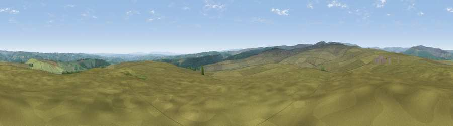

Viewpoint near Wolsingham
#9825 in England · top 19% of its area beats it · near Wolsingham · open accessWhere it is
The exact computed spot (NZ 05725 33275). Click the marker for map links.
Public access: this spot lies on mapped open-access land (CRoW Act 2000) — you may roam here on foot. Computed from Natural England's CRoW access layer and OpenStreetMap rights of way — not the legal definitive map. Always verify locally.
The view, rendered

A 360° render of this exact spot computed from the terrain model, tree cover and land cover — summer colours, afternoon light, calibrated against photographs of famous viewpoints. Real trees, hedges and buildings will differ in detail.
The panorama
Grey silhouette: terrain skyline in each direction (720 bearings, Earth curvature and refraction included). Dashed green: skyline with trees (+15 m) and buildings (+8 m) as obstacles. Blue strip: how far the ground is visible on each bearing.
Where the view opens
Wedge length = distance to the farthest visible ground on that bearing (vegetation-aware). Rings at 10, 25 and 50 km.
What fills the view
89% grassland · 9% woodland · 2% cropland
Angular shares of the visible panorama (visual magnitude), not map area. Landscape diversity 0.18 (0–1 Shannon).
Key numbers
More beautiful places nearby
The staircase of upgrades: each row has a higher view potential than everything closer. Driving times are estimates from straight-line distance, calibrated against real road routing — check an actual route before setting out.
| Place | Direction | Drive | Score |
|---|---|---|---|
| Viewpoint near Frosterley | WNW · 3 km | ~7 min | 63.5 |
| Five Pikes | W · 4 km | ~10 min | 66.9 |
| Viewpoint near Frosterley | WSW · 6 km | ~13 min | 70.6 |
| Collier Law | NNW · 9 km | ~18 min | 71.7 |
| Viewpoint near Eggleston | SSW · 10 km | ~19 min | 76.0 |
| Pontop Pike | NNE · 22 km | ~36 min | 77.8 |
| Little Dun Fell | W · 35 km | ~54 min | 78.4 |
| Cross Fell | W · 37 km | ~56 min | 78.7 |
54.69448, -1.91270 · source: screening · position refined by local search. Computed location — check access rights before visiting.